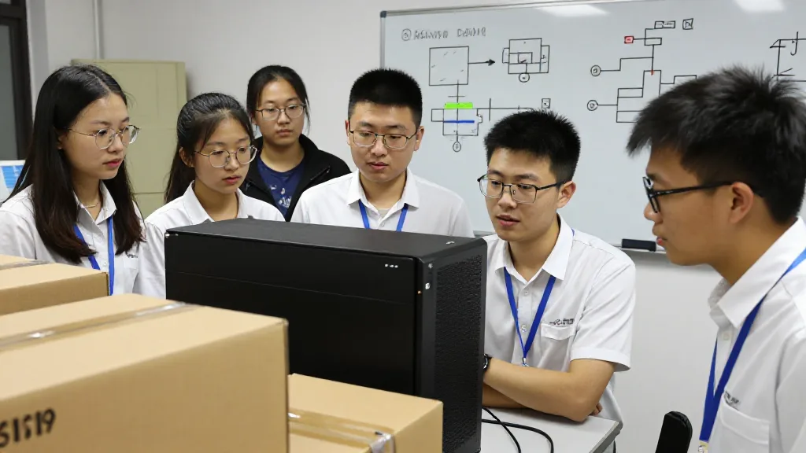
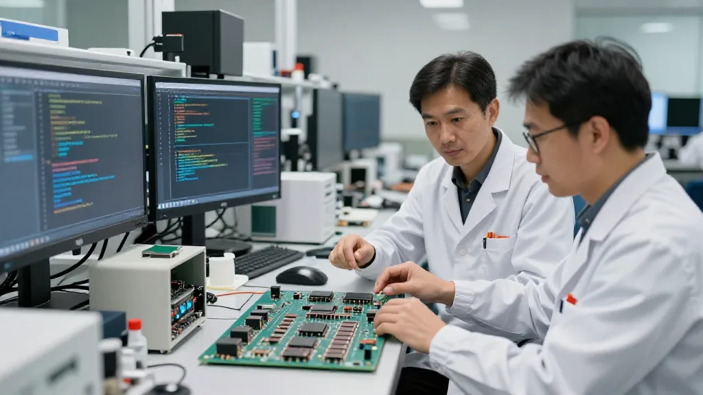

2026年9月16日。
今日头条推送咗一篇文章，标题好抢眼：《还能搞到B300吗？在国内要“搞定”一台英伟达B300服务器，渠道可分...》。
睇完之后，我哋呢个做 AI 算力生意嘅人，有几嘅话想讲。
一、文章讲咗咩？
头条嗰篇文章，核心讲嘅就系 2026 年嘅一个荒诞现实：
一台英伟达 B300 AI 服务器：
- 美国公开售价：55 万美元（约 400 万人民币）
- 中国灰色渠道价格：800 万 - 1450 万人民币
- 溢价 2 - 3.6 倍
8 颗 Blackwell Ultra 芯片、288GB HBM3e 显存、2.1TB 显存总量——能流入中国市场嘅、事实上最强嘅 AI 推理服务器。
二、文章嘅亮点 + 我嘅点评
亮点 1：「算力 = 营收」嘅转变
文章讲：「AI 从尝鲜进入到了干活。Agent 真的跑起来了，写代码、做研报、处理工单……Token 消耗指数级增加。」
我嘅点评：呢个系我哋呢代做 AI 算力生意嘅人，等咗 5 年嘅时刻。
2019-2022 年，我哋卖 AI 服务器畀科研机构、大专院校，佢哋当玩具——几十万部模型玩玩，写下论文就收埋。
2026 年彻底唔同：大模型公司 Token 直接变现，云厂商按 Token 收费，企业用 AI Agent 替代员工。算力由「成本」变成「营收」——呢个系我哋做算力生意嘅黄金时期。

圖片由 AI輔助創作（Z-Image-Turbo）
亮点 2：「1450 万嘅魔幻数字」
文章讲：「一台机器在美国的公开售价是 55 万美元，折合人民币还不到 400 万……1450 万这个数字就有了另一层含义。它不是英伟达定的价，多出来的这一千多万，是国内买家自己加上去的。」
我嘅点评：呢个就系「信息差 + 时间差」嘅极致案例。我哋做贸易嘅人，最熟悉呢种价差套利。1998 年我做电子产品出口，大陆同香港嘅价差有时都系 30%。而家 B300 嘅 3.6 倍溢价，系更大嘅套利空间。
但呢种套利，唔系所有人都玩得起：你要识得人，要有钱，要识得货，要识得时机。呢啲就系我哋呢代 70 后嘅核心竞争力。
亮点 3：「国产芯片嘅三道坎」
文章讲：「国产芯片性能不差，但买家宁可付 3 倍溢价也不投给国产。」
我嘅点评：我哋做电子消费品嘅人，对呢个现象特别有感觉。国产芯片嘅三道坎：第一，软件生态，CUDA 同 PyTorch 兼容唔系一两年追得上；第二，客户信任，出 bug 损失几千万，边个敢换；第三，供应链成熟度，出货稳定同售后都系长期工程。呢三道坎，国产芯片至少要 3-5 年先能跨越，所以 B300 嘅价格仲会高位企稳 2-3 年。

圖片由 AI輔助創作（Z-Image-Turbo）
三、文章嘅盲点（我哋嘅补充）
盲点 1：冇提及「租赁」嘅大市场
文章讲咗买断嘅价格（1450 万），但冇详细讲租赁市场。月租 19 万，一年期租约，仲要排队等。假设国内 100 家中型 AI 公司，每家租 5 部，即系 500 部嘅租赁市场，年租金 500 × 19 × 12 = 11.4 亿。
租赁市场嘅机会，比买断更大：资金门槛低，灵活度高，适合中小公司。我哋嘅判断：未来 2 年，AI 算力租赁会係最大嘅创业机会。
圖片由 AI輔助創作（Z-Image-Turbo）
盲点 2：冇提及「灰色渠道」嘅风险
灰色渠道有四种风险：法律风险，可能违反美国出口管制；质量风险，可能有仿冒改装货；支持风险，英伟达唔会保；供应链风险，渠道随时断货。我哋嘅建议：如果一定要买，通过有信誉嘅渠道，保留所有文件，仲可以考虑租赁，唔一定要买断。
盲点 3：冇提及「应用层」嘅机会
文章专注讲算力供应端，冇提应用层需求端嘅机会。算力加茶、加医疗、加教育、加法律，垂直行业 AI 应用比通用算力更值钱。唔好只做卖机器，要做算力加行业解决方案，呢个系未来 5 年最大嘅创业机会。
圖片由 AI輔助創作（Z-Image-Turbo）
四、文章嘅真正启示
头条嗰篇文章，表面上讲 B300 点解咁贵。但真正嘅启示系：第一，稀缺永远值钱，每一次稀缺都系财富重新分配；第二，灰色市场反映真实需求，1450 万唔系泡沫，系刚需；第三，中国 AI 嘅焦虑系真实嘅，出口管制、国产替代、时间窗口、抢货大战，呢个系中美科技战嘅一个缩影。
五、作为做 AI 算力嘅人，我哋应该点做？
第一，把握时间窗口，B300 高位仲会持续 2-3 年，呢个时期做算力係黄金时期，但要小心泡沫。第二，由卖机器转向卖服务，托管、运维、租赁先系稳定商业模式。第三，垂直化，唔做通用供应商，做算力加行业嘅垂直服务商。第四，合规避险，通过正规渠道，保留文件，法律风险系最大嘅单点故障。
六、对头条文章嘅总评
评分：4/5。优点系数据详实，案例丰富，分析有深度；不足系冇讲租赁市场具体机会，冇讲法律风险细节，冇讲应用层创业机会。整体值得一读，但唔够全面。我哋做 AI 算力嘅人，要睇到文章背后嘅机会。
1450 万嘅 B300，唔只系一台机器嘅价格，系中国 AI 时代嘅一个缩影。我哋呢代人由电子产品到 AI 算力，见证紧中国科技嘅每一个关键转折点。未来 5 年，AI 算力加行业应用，会係最大嘅创业机会。你呢，准备好未？
本文系对头条文章《还能搞到B300吗？》嘅深度点评。参考资料：搜狐、新浪财经、网易等公开报道。
16 September 2026.
Today Toutiao pushed me an article with a striking headline: "Can you still get a B300? To 'sort out' an Nvidia B300 server in China, the channels break down..."
After reading it, those of us in the AI compute business have a few things to say.
1. What did the article say?
The core of that Toutiao article is one absurd reality in 2026:
One Nvidia B300 AI server:
- US list price: USD 550,000 (about RMB 4 million)
- Chinese grey-channel price: RMB 8 million – 14.5 million
- A premium of 2 to 3.6 times
8 Blackwell Ultra chips, 288GB of HBM3e memory, 2.1TB of total memory — the strongest AI inference server that can, in practice, flow into the Chinese market.
2. The article's highlights, plus my comments
Highlight 1: the shift to "compute = revenue"
The article says: "AI has moved from trying things out to doing real work. Agents are actually running now — writing code, producing research reports, handling tickets... token consumption is rising exponentially."
My comment: this is the moment my generation in the AI compute business has waited five years for.
From 2019 to 2022 we sold AI servers to research institutions and universities, and they treated them as toys — a few hundred thousand for a model to play with, write a paper, then put it away.
2026 is completely different: large model companies turn tokens directly into money, cloud providers charge by token, and enterprises use AI agents to replace staff. Compute has gone from a "cost" to "revenue" — this is the golden period for those of us in the compute business.
Image created with AI assistance (Z-Image-Turbo)
Highlight 2: "the magic number of 14.5 million"
The article says: "A single machine has a public US price of USD 550,000, which is less than RMB 4 million... that gives the number 14.5 million another layer of meaning. It is not a price set by Nvidia; the extra ten million or so was added by domestic buyers themselves."
My comment: this is the ultimate case of an information gap plus a timing gap. Those of us in trade know this kind of price-gap arbitrage best. In 1998, when I was exporting electronics, the price gap between the mainland and Hong Kong was sometimes 30%. The 3.6x premium on the B300 today is a much bigger arbitrage.
But not everyone can play this game: you need the contacts, the money, the product knowledge and the timing. That is exactly the core competitiveness of my generation, the post-70s.
Highlight 3: "the three hurdles for domestic chips"
The article says: "Domestic chips are not bad in performance, but buyers would rather pay a 3x premium than put money into domestic ones."
My comment: those of us who did consumer electronics feel this phenomenon keenly. The three hurdles for domestic chips: first, the software ecosystem — catching up with CUDA and PyTorch compatibility is not a one or two-year job; second, customer trust — when a bug costs you tens of millions, who dares to switch; third, supply chain maturity — stable shipping and after-sales support are long-term projects. Domestic chips need at least 3 to 5 years to clear these three hurdles, so B300 prices will stay firm at a high level for another 2 to 3 years.
Image created with AI assistance (Z-Image-Turbo)
3. The article's blind spots (our additions)
Blind spot 1: no mention of the big rental market
The article covers the outright purchase price (14.5 million) but says nothing detailed about the rental market. RMB 190,000 a month, one-year leases, and you still have to queue. Assume 100 mid-sized AI companies in China each rent 5 machines — that is a rental market of 500 machines, and annual rent of 500 × 19 × 12 = RMB 1.14 billion.
The opportunity in rental is bigger than in outright sales: a lower capital threshold, more flexibility, and a better fit for small and mid-sized companies. Our judgement: over the next two years, AI compute rental will be the biggest startup opportunity.
Image created with AI assistance (Z-Image-Turbo)
Blind spot 2: no mention of grey-channel risk
There are four kinds of risk in grey channels: legal risk, since it may violate US export controls; quality risk, since there may be counterfeit or modified goods; support risk, since Nvidia will not honour the warranty; and supply chain risk, since a channel can run dry at any time. Our advice: if you must buy, go through a reputable channel, keep every document, and consider renting — you do not have to buy outright.
Blind spot 3: no mention of opportunities at the application layer
The article focuses on the supply side of compute and never mentions the demand side, the application layer. Compute plus tea, plus healthcare, plus education, plus law — vertical industry AI applications are worth more than general-purpose compute. Do not just sell machines; sell compute plus industry solutions. That is the biggest startup opportunity of the next five years.
Image created with AI assistance (Z-Image-Turbo)
4. What the article really tells us
On the surface, that Toutiao article explains why the B300 is so expensive. But the real message is this: first, scarcity is always worth money, and every shortage redistributes wealth; second, the grey market reflects real demand — 14.5 million is not a bubble, it is hard demand; third, China's AI anxiety is real — export controls, domestic substitution, the time window, the scramble for stock. This is a miniature of the US-China tech war.
5. What should we do, as people in the AI compute business?
First, seize the time window: B300 will stay at a high price for another 2 to 3 years, and that makes this a golden period for compute, but watch out for a bubble. Second, move from selling machines to selling services: hosting, operations and rental are the stable business models. Third, go vertical: do not be a general supplier, be a compute-plus-industry vertical service provider. Fourth, stay compliant and avoid risk: use proper channels, keep the paperwork — legal risk is the biggest single point of failure.
6. Overall verdict on the Toutiao article
Score: 4/5. The strengths are detailed data, rich cases and analysis with depth; the weaknesses are that it does not give the concrete opportunity in the rental market, the details of legal risk, or the startup opportunity at the application layer. It is worth reading overall, but not comprehensive enough. Those of us in AI compute need to see the opportunity behind the article.
A B300 at 14.5 million is not just the price of a machine, it is a miniature of China's AI era. My generation has gone from consumer electronics to AI compute, and we are watching every key turning point in Chinese technology. Over the next five years, AI compute plus industry applications will be the biggest startup opportunity. So — are you ready?
This is a detailed commentary on the Toutiao article "Can you still get a B300?". Sources: public reports from Sohu, Sina Finance, NetEase and others.